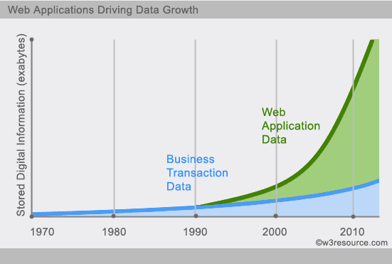
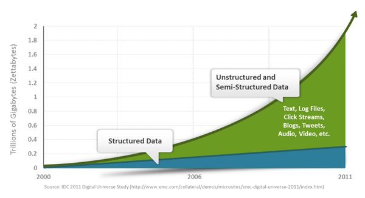
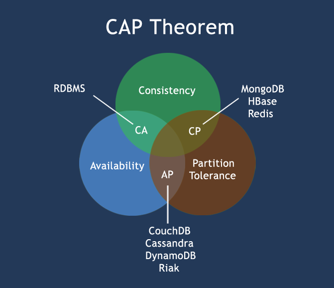

NoSQL 入門
NoSQL（NoSQL = Not Only SQL）は、「単なるSQLではない」という意味です。
現代のコンピューティングシステムでは、毎日ネットワーク上で膨大な量のデータが生成されています。
これらのデータの大部分は、リレーショナルデータベース管理システム（RDBMS）によって処理されます。1970年にE.F.Coddが発表した「A relational model of data for large shared data banks」というリレーショナルモデルに関する論文により、データモデリングとアプリケーションプログラミングがより簡単になりました。
応用実践により、リレーショナルモデルはクライアントサーバープログラミングに非常に適しており、期待をはるかに超える利益をもたらすことが証明されました。今日では、構造化データストレージにおけるネットワークおよびビジネスアプリケーションの主要技術となっています。
NoSQLはまったく新しいデータベース革命運動であり、初期から提唱されていましたが、2009年までにその傾向はますます高まりました。NoSQLの支持者たちは非リレーショナルなデータストレージの使用を提唱しており、リレーショナルデータベースが遍在する状況に対して、この概念は間違いなく新しい思考の注入です。
。RackspaceのEric Evansが再びNoSQLの概念を提唱しました。このときのNoSQLは主に非リレーショナル型、分散型、ACIDを提供しないデータベース設計パターンを指していました。
トランザクションは英語でtransactionであり、現実世界の取引と非常に似ています。それには以下の4つの特性があります：
1、A（Atomicity）原子性
原子性は理解しやすいものです。つまり、トランザクション内のすべての操作はすべて完了するか、すべて実行されないかのどちらかです。トランザクションが成功する条件は、トランザクション内のすべての操作が成功することです。1つの操作でも失敗すれば、トランザクション全体が失敗し、ロールバックが必要になります。
例えば銀行振込で、A口座からB口座に100元を送金する場合、2つのステップに分かれます：1）A口座から100元を引き出す；2）B口座に100元を入金する。この2つのステップは一緒に完了するか、一緒に完了しないかのどちらかです。最初のステップだけが完了し、2番目のステップが失敗すると、お金が不思議と100元減ってしまいます。
2、C（Consistency）一貫性
一貫性も比較的理解しやすいです。つまり、データベースは常に一貫した状態にある必要があり、トランザクションの実行によってデータベースの元の一貫性制約が変わらないということです。
例えば、整合性制約としてa+b=10がある場合、トランザクションがaを変更したならば、bも変更して、トランザクション終了後もa+b=10を満たす必要があります。そうでなければトランザクションは失敗します。
3、I（Isolation）独立性
いわゆる独立性とは、並行して実行されるトランザクション同士が互いに影響を与えないことを指します。あるトランザクションがアクセスしようとするデータが別のトランザクションによって変更されている場合、その別のトランザクションがコミットされていない限り、アクセスするデータは未コミットのトランザクションの影響を受けません。
例えば、A口座からB口座に100元を送金する取引があるとします。この取引がまだ完了していない場合、Bが自分の口座を照会しても、新しく増えた100元は見えません。
4、D（Durability）永続性
永続性とは、トランザクションがコミットされた後、その変更がデータベースに永続的に保存され、ダウンが発生しても失われないことを指します。
分散システム
分散システム（distributed system）は、複数のコンピュータと通信ソフトウェアコンポーネントがコンピュータネットワーク（ローカルネットワークまたはワイドエリアネットワーク）を介して接続されて構成されます。
分散システムはネットワーク上に構築されたソフトウェアシステムです。ソフトウェアの特性により、分散システムは高度な凝集性と透過性を持ちます。
したがって、ネットワークと分散システムの違いは、ハードウェアではなく、高水準ソフトウェア（特にオペレーティングシステム）にあります。
分散システムは、PC、ワークステーション、ローカルネットワーク、ワイドエリアネットワークなど、さまざまなプラットフォームに適用できます。
分散コンピューティングの利点
信頼性（フォールトトレランス）：
分散コンピューティングシステムの重要な利点の1つは信頼性です。1台のサーバーのシステムがクラッシュしても、他のサーバーには影響しません。
スケーラビリティ：
分散コンピューティングシステムでは、必要に応じてより多くのマシンを追加できます。
リソース共有：
データの共有は、銀行や予約システムなどのアプリケーションに不可欠です。
柔軟性：
このシステムは非常に柔軟であるため、新しいサービスのインストール、実装、デバッグが容易です。
より高速な処理速度：
分散コンピューティングシステムは複数のコンピュータの計算能力を利用できるため、他のシステムよりも高速な処理速度を実現します。
オープンシステム：
オープンなシステムであるため、ローカルでもリモートでもそのサービスにアクセスできます。
より高い性能：
集中型コンピュータネットワークと比較して、クラスタはより高い性能（およびより優れたコストパフォーマンス）を提供できます。
分散コンピューティングの欠点
トラブルシューティング：
トラブルシューティングと問題の診断。
ソフトウェア：
ソフトウェアサポートが少ないことは、分散コンピューティングシステムの主な欠点です。
ネットワーク：
ネットワークインフラストラクチャの問題には、伝送の問題、高負荷、情報の喪失などが含まれます。
セキュリティ：
オープンシステムの特性により、分散コンピューティングシステムにはデータのセキュリティや共有のリスクなどの問題が存在します。
NoSQLとは何か？
NoSQLとは、非リレーショナル型データベースを指します。NoSQLはNot Only SQLの略称とも呼ばれ、従来のリレーショナルデータベースとは異なるデータベース管理システムの総称です。
NoSQLは超大規模データの保存に使用されます（例えば、GoogleやFacebookは毎日ユーザーから兆ビット単位のデータを収集しています）。これらのタイプのデータストレージは固定のスキーマを必要とせず、余分な操作なしで水平にスケールアウトできます。
なぜNoSQLを使うのか？
今日、私たちはサードパーティのプラットフォーム（Google、Facebookなど）を通じて、データに簡単にアクセスし取得できます。ユーザーの個人情報、ソーシャルネットワーク、地理位置情報、ユーザー生成データ、ユーザー操作ログは倍増しています。これらのユーザーデータをマイニングする場合、SQLデータベースはこれらのアプリケーションには適しておらず、NoSQLデータベースの発展はこれらの大きなデータをうまく処理できます。

例
ソーシャルネットワーク：
Separate records: UserID, first_name,last_name, age, gender,...
Task: Find all friends of friends of friends of ... friends of a given user.
Wikipediaページ：
Combination of structured and unstructured data
Task: Retrieve all pages regarding athletics of Summer Olympic before 1950.
RDBMS vs NoSQL
RDBMS
-
高度に組織化された構造化データ
- 構造化問い合わせ言語（SQL） (SQL)
-
データとリレーションは個別のテーブルに保存されます。
- データ操作言語、データ定義言語
- 厳密な一貫性
- 基本的なトランザクション
NoSQL
- SQLだけでなく、それ以上のものを表す
- 宣言型クエリ言語がない
- 事前定義されたスキーマがない
- キー・バリューペアストレージ、カラムストレージ、ドキュメントストレージ、グラフデータベース
- 最終的な一貫性であり、ACID特性ではない
- 非構造化で予測不可能なデータ
- CAP定理
- 高性能、高可用性、スケーラビリティ

NoSQLの簡単な歴史
NoSQLという用語は1998年に初めて登場しました。これはCarlo Strozziが開発した、軽量でオープンソース、SQL機能を提供しないリレーショナルデータベースです。
2009年、Last.fmのJohan Oskarssonは分散オープンソースデータベースに関する議論を開始しました
2009年にアトランタで開催された"no:sql(east)"討論会は画期的な出来事であり、そのスローガンは"select fun, profit from real_world where relational=false;"でした。したがって、NoSQLの最も一般的な解釈は「非リレーショナル型」であり、単にRDBMSに反対するのではなく、Key-Value Storeとドキュメントデータベースの利点を強調するものです。
CAP定理（CAP theorem）
コンピュータサイエンスにおいて、CAP定理（CAP theorem）はブルーアーの定理（Brewer's theorem）とも呼ばれ、分散コンピューティングシステムでは以下の3点を同時に満たすことは不可能であると述べています：
- 一貫性（Consistency）（すべてのノードが同時に同じデータを持つ）
- 可用性（Availability）（各リクエストに対して、成功か失敗かに関わらず応答が保証される）
- パーティション耐性（Partition tolerance）（システム内の任意の情報の喪失や障害がシステムの継続的な動作に影響を与えない）
CAP理論の核心は、分散システムが一貫性、可用性、パーティション耐性の3つの要件を同時に完全に満たすことは不可能であり、せいぜい同時に2つだけをうまく満たすことができるということです。
したがって、CAP原理に基づいてNoSQLデータベースは、CA原則を満たすもの、CP原則を満たすもの、AP原則を満たすものの3つの大きなカテゴリに分類されます。
- CA - 単一ノードクラスタ、一貫性と可用性を満たすシステム。通常、拡張性はあまり高くない。
- CP - 一貫性とパーティション耐性を満たすシステム。通常、パフォーマンスは特に高くない。
- AP - 可用性とパーティション耐性を満たすシステム。通常、一貫性に対する要求は低めの場合がある。

NoSQLの利点／欠点
長所:
- - 高い拡張性
- - 分散コンピューティング
- - 低コスト
- - アーキテクチャの柔軟性、半構造化データ
- - 複雑なリレーションがない
短所:
- - 標準化されていない
- - 限られたクエリ機能（現時点では）
- - 結果整合性は直感的ではないプログラム
BASE
BASE：Basically Available, Soft-state, Eventually Consistent。Eric Brewer によって定義された。
CAP理論の核心は、分散システムが一貫性、可用性、パーティション耐性という3つの要件を同時に十分に満たすことは不可能であり、せいぜい同時に2つをうまく満たすことしかできないということです。
BASEは、NoSQLデータベースが通常、可用性と一貫性に対して弱い要求を持つ原則です。
- Basically Available -- 基本可用
- Soft-state -- ソフト状態/フレキシブルなトランザクション。 "Soft state"は"コネクションレス"と理解でき、"Hard state"は"コネクション指向"です。
- Eventually Consistency -- 結果整合性。これはACIDの最終的な目的でもあります。
ACID vs BASE
| ACID | BASE |
|---|---|
| 原子性(Atomicity) | 基本可用(Basically Available) |
| 一貫性(Consistency) | ソフト状態/フレキシブルトランザクション(Soft state) |
| 分離性(Isolation) | 結果整合性 (Eventual consistency) |
| 永続性 (Durable) |
NoSQLデータベースの分類
| 種類 | 一部の代表 |
Hbase
Cassandra
Hypertable
名前の通り、列ごとにデータを格納します。最大の特徴は、構造化データと半構造化データを簡単に格納でき、データ圧縮に便利で、特定の列または複数列に対するクエリに非常に大きなIO優位性があることです。
ドキュメントストレージ
MongoDB
CouchDB
ドキュメントストレージは通常、jsonに似た形式で保存され、保存される内容はドキュメント型です。これにより、特定のフィールドにインデックスを作成して、リレーショナルデータベースの一部の機能を実現する機会もあります。
キーバリューストレージ
Tokyo Cabinet / Tyrant
Berkeley DB
MemcacheDB
Redis
keyを使用してvalueをすばやく検索できます。一般的に、ストレージはvalueの形式を問わず、そのまま受け入れます。（Redisには他の機能も含まれています）
グラフストレージ
Neo4J
FlockDB
グラフ関係の最適なストレージです。従来のリレーショナルデータベースで解決しようとするとパフォーマンスが低下し、設計・使用も不便です。
オブジェクトストレージ
db4o
Versant
オブジェクト指向言語に似た構文でデータベースを操作し、オブジェクトとしてデータを格納・取得します。
XMLデータベース
Berkeley DB XML
BaseX
XMLデータを効率的に保存し、XQuery、XPathなどのXML内部クエリ構文をサポートします。
誰が使っているか
現在、多くの企業がNoSQLを使用しています：- Mozilla
- Adobe
- Foursquare
- Digg
- McGraw-Hill Education
- Vermont Public Radio
クリックしてノートを共有
<p style="font-size:14px;">ノートはこの記事の内容を拡張したものである必要があります！</p><br> <p style="font-size:12px;"><a href="../tougao.html" target="_blank">記事の投稿は、ここをクリックしてください</a></p> <p style="font-size:14px;"><a href="../w3cnote/runoob-user-test-intro.html" target="_blank">登録招待コードの取得方法</a></p> <h3 class="text-muted"><i class="fa fa-info-circle" aria-hidden="true"></i> ノートを共有する前に、必ず<a href=";.html" class="runoob-pop">ログイン</a>してください！</h3> <p><a href="../w3cnote/runoob-user-test-intro.html" target="_blank">登録招待コードの取得方法</a></p>